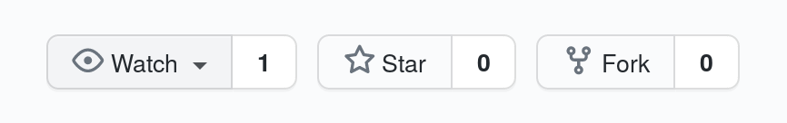

Our GitHub Work Flow for Collaboration
Collaborative work is very fun and it can lead to huge and fast improvements in a project's development. It is well proven that two heads are better than one. So it is important to make the collaborative process easy and efficient.
GitHub is one of the most popular and used code hosting platforms for version control and collaboration. You can get started without any coding or programming knowledge by simply creating an account. Then you can use your favourite browser to start your own projects and to collaborate in others' people projects too.
There are many tutorials and manuals out there starting from the github documentation and we definitely recommend reading it first here.
Once the jargon repositories, branches, commits, and Pull Requests is in your veins and you are not afraid of the command line any more, you may be wondering what the collaborative workflow looks like.
Here we present a very short summary of steps that Huehueocelotl takes in order to cooperate in joint projects, programming codes and more.
Step 1. Fork the repo

Once you have identified the Project repository of your collaborator, you click on the fork button.
This will copy the repository in your github account that you created.
This step needs no terminal interaction, all is done via the browser.
Step 2. Clone the repo
Now you can treat your forked repository as any other of your own. You can clone your new forked repository Project to your computer.
In your working directory you can type from the terminal
git clone http://github.com/your_username/Project.git
This will create a folder in your computer
named Project which will be usually referred as the local repository.
Step 3. Remote upstream for Sync
Up to now, what we have is just a copy of someone's else repository with a local folder in our computer. We can add, commit and push to our fork just as any other project we own. But we don't want to be an island. We want to be able to pull and keep updated with the changes the owner (and other collaborators) are making to the original repository.
We need to set up the remote upstream. One can see that origin points at our copied repository. We will defined an upstream
pointing to the owner's repository, owner_username:
git remote add upstream http://github.com/owner_username/Project.git
You can also type git remote -v to have a list of all configured remote repository for your fork.
Step 4. Branching
It is in a branch where the collaboration process happens. If you want to fix, improve, rewrite some part of the projects,
it is recommended to create a branch, and within the branch you can carry on the usual add, commit and push process. We will assume
that the name of the branch you are working in is features. Recall that in order to create this branch you type
git checkout -b features
There are many difficulties one can face here. It may happen that changes are implemented while we are working in our branch. We have to always pull from our upstream (that points to the owner repo) to be up-to-date and avoid merging problems later when we want to submit changes.
If your work in the branch feature is done and you want to tell the owner of the original repo to implement these changes into the
original master branch, then you are ready to ask for a pull request.
Step 5. Pull request
Here again, there is no need for the command line. Github makes it all easy: go
to your github account, then to the repository Project and select the
branch features. Then you fill see a button that looks like this one
This will compare and check if your changes produce no conflict with any other collaboration made and will send a notification via email to the owner of the branch. The owner can then check, revise the changes and decide to accept them and to merge your changes into the master branch.
Step 6. Cleansing branches
After a successful pull request, you can perform the following four steps cleansing procedure: pull, delete, push and push deletion:
git pull upstream master git branch -d feature git push origin master git push --delete origin feature
You can keep your fork updated by typing regularly
git pull upstream master git push origin master
And that's it. You can create another branch in order to perform another fix and keep the project improving.